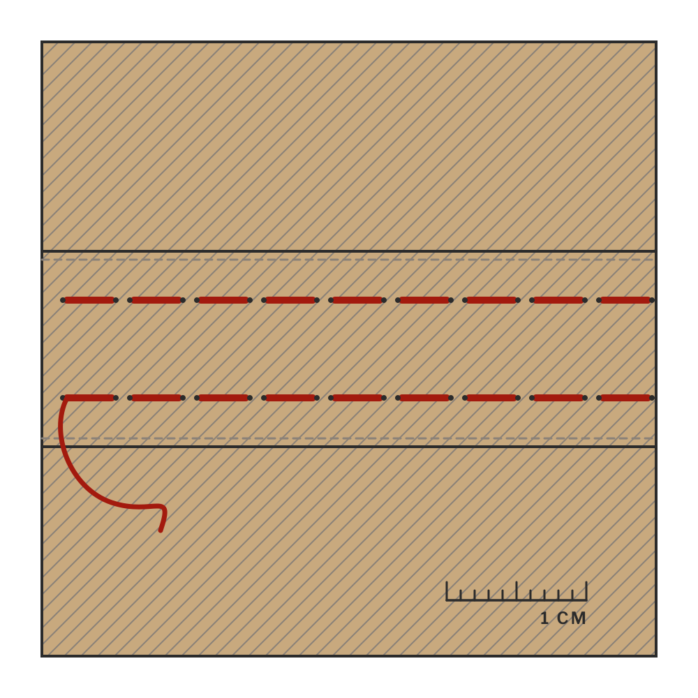
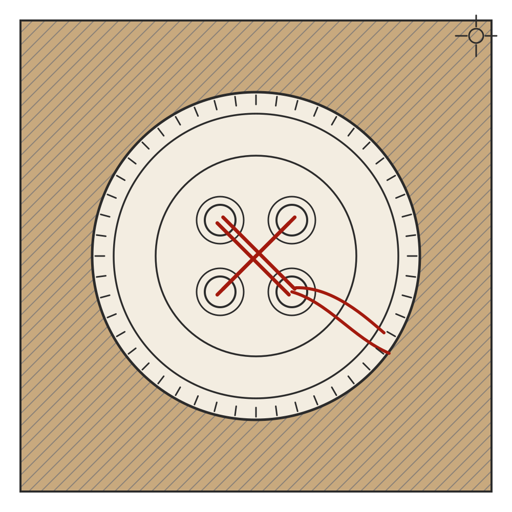

Las 4 cosas, en una lista.
1
Atraques firmes en los bolsillos

2
Hilo por calibre y costura pareja
3
Tela escogida para tu uso: tócala

4
Cierres y botones que no se oxidan
Guárdalo para cuando vayas a comprar.